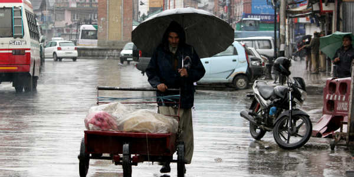
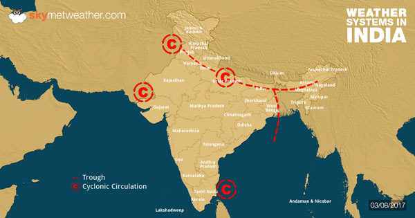

| 
The state of Uttar Pradesh has been receiving moderate to heavy showers from the past two days. Mainly northern districts including Bareilly, Moradabad, have been receiving good rains. However, southern districts such as Varanasi, Agra, Orai, and Fursatganj have also received scattered light showers. |

The axis of Monsoon trough has now shifted towards the foothills of Himalayas. Thus, now, westerly winds are blowing over Delhi and the NCR region. These westerly winds are relatively drier in nature, humidity levels have also decreased. Now, we expect dry weather conditions to continue until tomorrow. |

Odisha has been receiving good rainfall since last many days. At present rainfall of Odisha is normal. During the second half of July, a Low-Pressure area developed over Odisha coast which gave moderate to heavy showers leading flooding in many districts. As per myWeather, light scattered rains are expected to continue for another two days. |